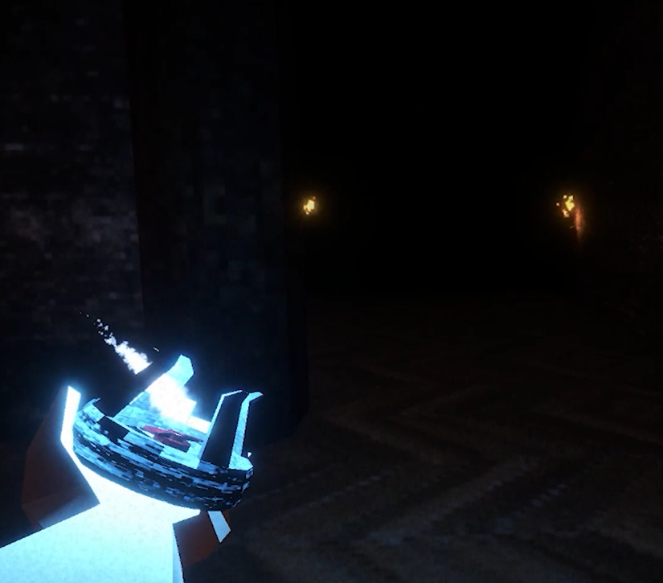
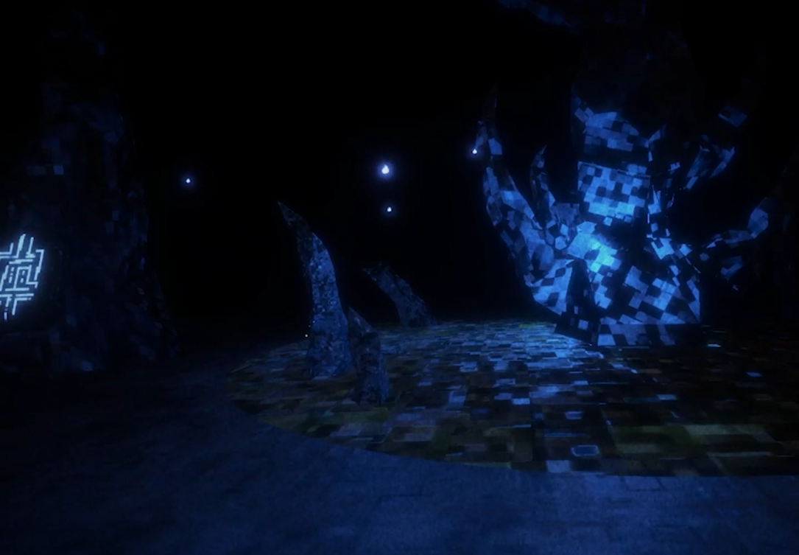
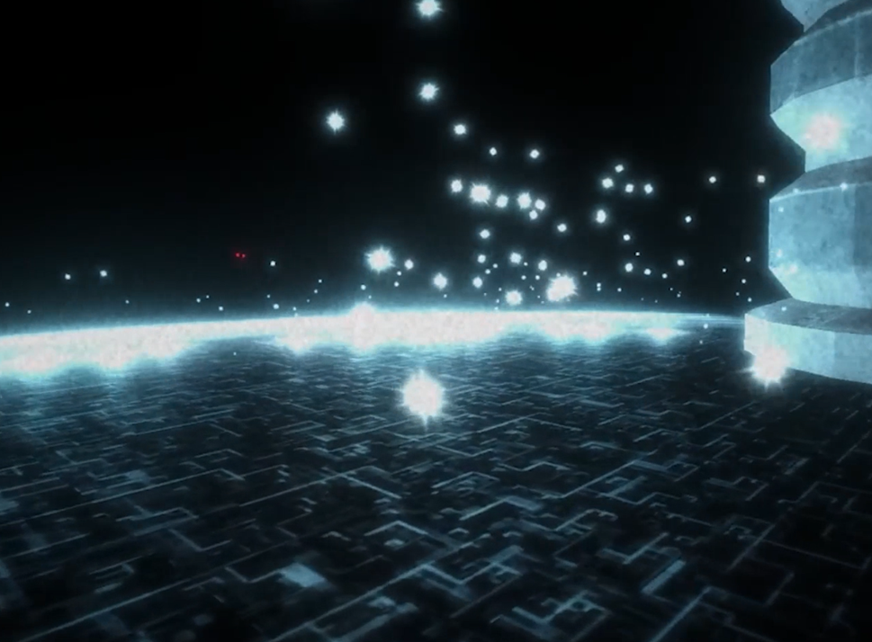
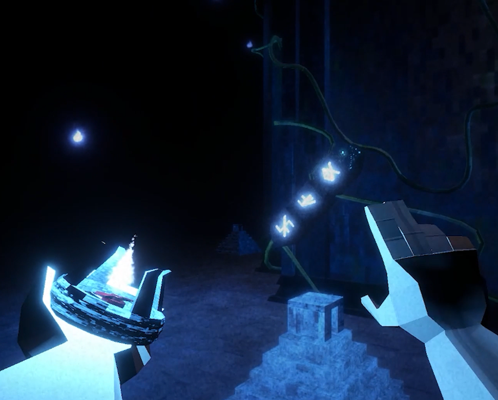
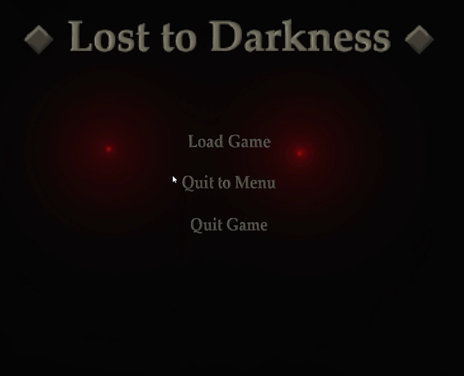
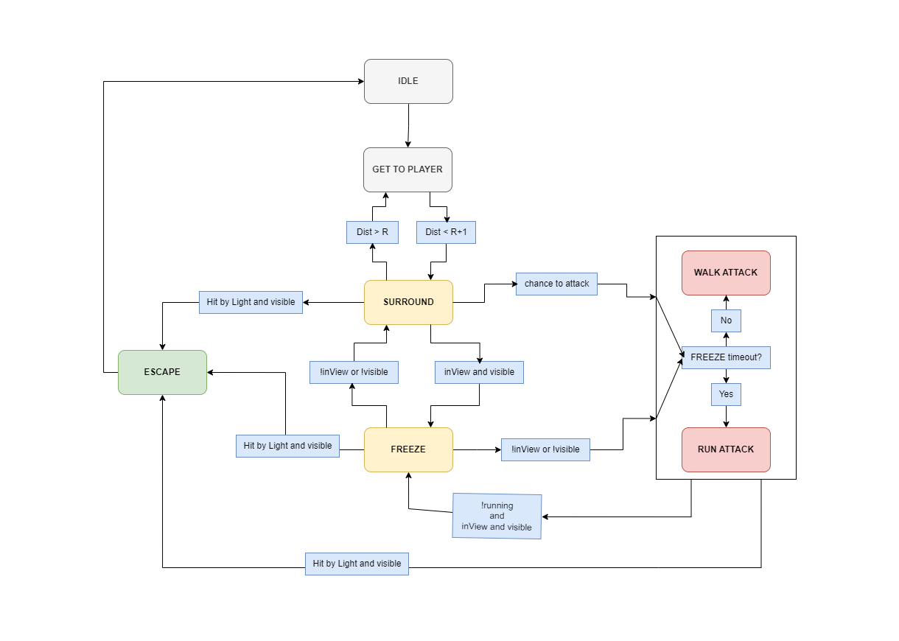
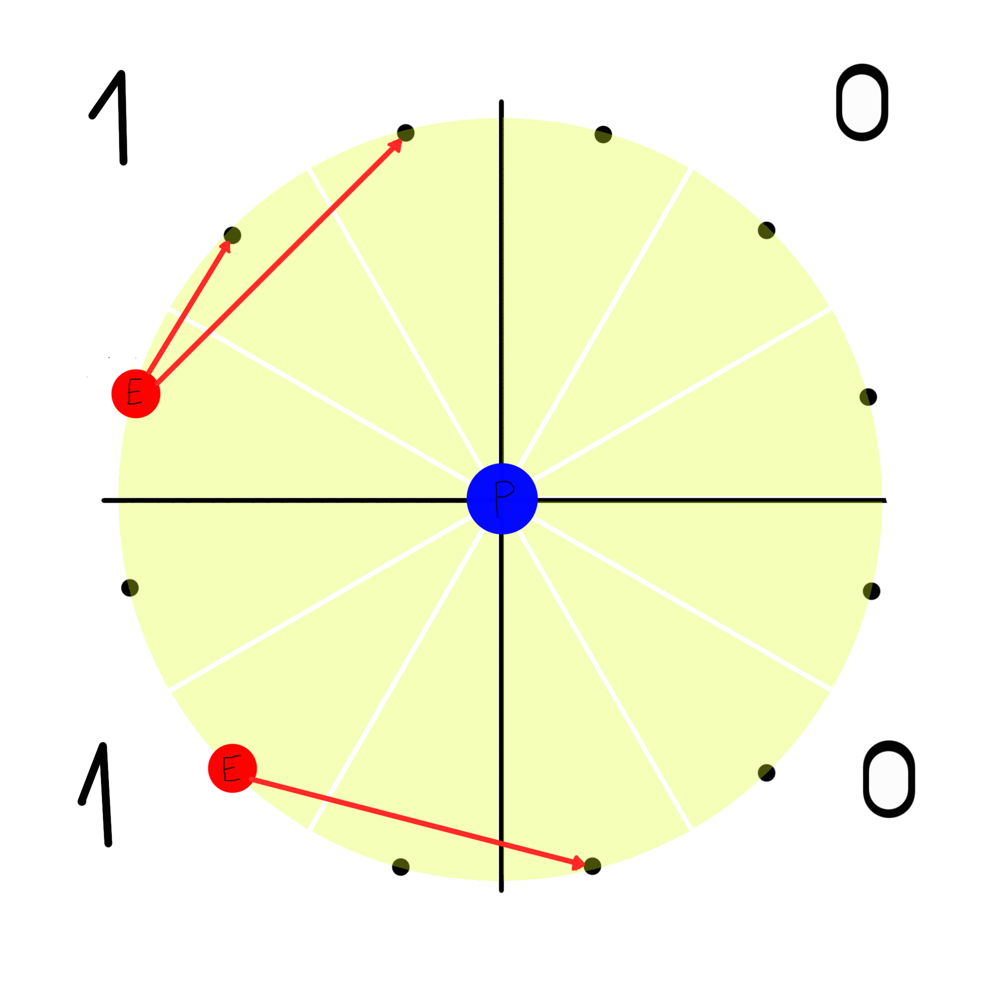
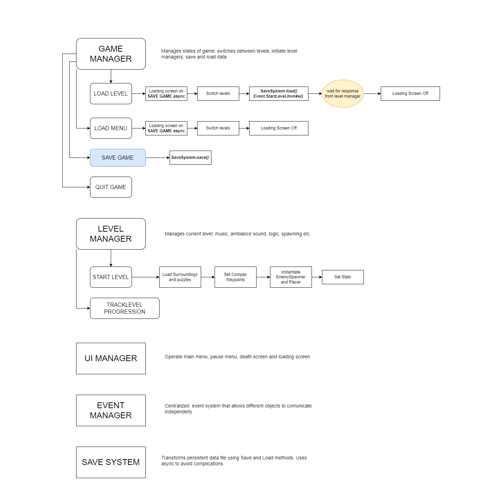

Gallery






A first-person horror game built around dynamic enemy AI and light mechanics.
Lost to the Darkness is a first-person horror game that is build around the dread and tension of constantly being hunted by a relentless enemy. The player must navigate through dark environments, using light to survive and uncover the story behind the darkness.
The game is currently in development and is being created by a team of 5 people. The project has been ongoing for 4 months.
During the process I was responsible for:
Enemy AI
Core Mechanics
Game Architecture
Interaction System
Lighting
VFX
Post Processing

Consists of 6 states:
Idle
At the start of the level enemies are instantiated on the platform and are in the Idle state. They cannot act, NavMeshAgent is disabled, and they are not visible to the player.
GetToPlayer
Triggered by spawner when initiated. Enemies have higher speed and move towards the player directly. If enemies enter the Radius around player, they will switch to the Surround state.
Surround
In this state, enemies choose one of 12 segments on the Radius around the player and move to it. They will remain in this position relative to the player. During this state, enemies will change their position, potentially closing distance to the player. If they are close enough, they will get the chance to enter the Attack state. If the enemy is observed by the player, it will enter the Freeze state. If the enemy leaves the Radius, it will switch back to GetToPlayer state.
Freeze
Can be entered from surround or attack states. Enemy will stop moving and will not be able to attack the player. If the player looks away, the enemy will switch back to previous state. While observed, the enemy starts a timer, and if it is observed for too long, it will enter the Attack state and enable running. If the enemy is running it is not affected by the Freeze state.
Attack
The enemy starts to move directly towards the player. If it is observed by the player, it will enter the Freeze state. Enables "attacking". The Attack state is permanent and enemy will not reenter Surround state again.
Escape
When hit by player light and not in Idle state, the enemy choses closest of spawnpoints and moves towards it. If it reaches the spawnpoint, it will switch back to Idle state and teleport out.

The available positions are divided into four quarters which are divided into 3 segments each. First time, enemy chooses position closest to it without difficult calculations. Every other time it calculates allowed positions and chooses one randomly.
Positions are calculated based on the following rules:
1. If the segment is occupied by another enemy, it is not allowed.
2. If the segment is in player vision, it is not allowed.
3. Are there any quarters that have less enemies than current quarter? If yes, only those quarters are allowed.
4. From segments of the allowed quarters, are there any segments within reach? If yes, choose random from those segments. Else, choose random segment from current quarter.
5. If there are no allowed segments, stay in place.
This system allows for dynamic enemy behavior, without the need for complex calculations or pathfinding.

The core principle of the architecture is to divide responsibilities between GameManager and LevelManagers. GameManager is a singleton responsible for changing game states and triggering save and load of the game inside SaveSystem. LevelManagers are responsible for managing their own level and its components. They are created and destroyed with the level, and they can communicate with GameManager to change game states or trigger events. EventManager is a singleton that acts as a radio station, allowing different components to communicate with each other without direct references. It is used to trigger events and notify subscribers about changes in the game state. UI Manager consists of multiple UI components that comunicate with each other and with GameManager to display information to the player and receive input from them. SaveSystem is a singleton that tracks and rewrites saved data, handling it to the DataConverter to convert it to and from JSON format. It is responsible for saving and loading the game state, including player progress, level states, and other relevant data.
This game consists of multiple puzzles, does not feature inventory system, and has a limited number of interactable objects. Therefore, the interaction system is designed to be simple and efficient, allowing the player to interact with objects in the environment without unnecessary complexity. All objects are based on Interface with two methods: Interact and OnView. Interact method is called when the player interacts with the object, and OnView method is called when the player looks at the object.
There are two types of objects in the interaction system: reciever, sender. Reciever is the bigger object which counts how many senders are interacting with it. It can be a puzzle, a door, or any other object that requires multiple interactions to be completed. Sender is the smaller object which can be interacted with by the player. It can be a button, a lever, or any other object that can trigger an interaction with a reciever.
Reciever and sender both have a string id assigned to them in the inspector. When a sender is interacted with, it sends signal to the reciever with the same id. The reciever counts how many senders are interacting with it, and when the count reaches a certain threshold, it triggers an event or action.
Recievers can also be senders themselves, allowing for more complex interactions and puzzles.
Complete 28-minute playthrough.
Watch Full Gameplay




The repository contains architecture diagrams, selected gameplay systems and representative code examples.
View Repository